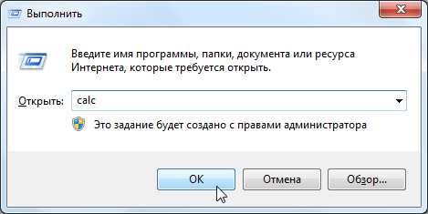
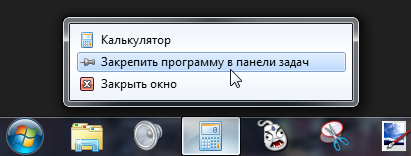

Содержание
Калькулятор можно окрыть несколькими способами.
Пуск -> Все программы -> Стандартные -> Калькулятор.
Сам калькулятор находится в C:\Windows\System32\calc.exe.
Нажми Win + R и введи слово calc.

Win - клавиша с логотипом Windows на клавиатуре.
Окно Выполнить также можно открыть через Пуск -> Все программы -> Стандартные -> Выполнить.
Открой калькулятор, затем закрепи его на панели задач, нажав правой кнопкой мыши по его значку.

Теперь ты сможешь запускать калькулятор с панели задач.
Можно вводить числа с клавиатуры, а также использовать клавиши "+", "-", "/" и "*".
Клавиша Enter аналогична комманде "=".
Клавиша Backspace удаляет 1 введенный символ.
Backspace не будет работать для чисел, полученных в результате математической операции, или при нестандартном изменении числа в режиме Программист.
Можно копировать числа из поля ввода комбинацией Ctrl + C и вставлять их в поле ввода комбинацией Ctrl + V.
Альтернатива - кликнуть на поле ввода правой кнопкой и выбрать Копировать/Вставить.